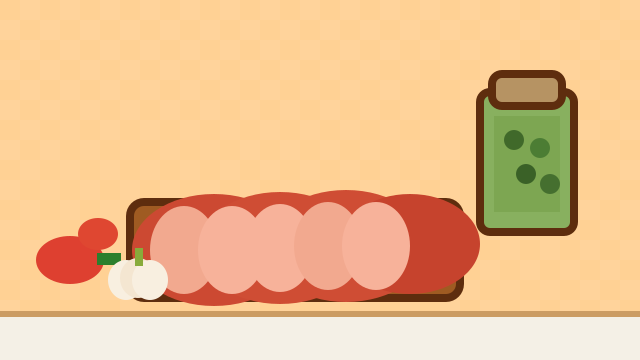

Под 0% хоть в лесу
Раздел про первый займ под 0%, подбор микрозаймов онлайн, предложения для новых клиентов и быстрый переход к займам на карту.
Перейти в разделРейтинг финансовых организаций
212.su — брендовый сайт про рейтинг микрозаймов, рейтинг финансовых организаций, займы онлайн, микрозаймы на карту и первый займ под 0 процентов.
Раздел про первый займ под 0%, подбор микрозаймов онлайн, предложения для новых клиентов и быстрый переход к займам на карту.
Перейти в раздел
Раздел про быстрые займы на повседневные расходы: микрозаймы онлайн, срочные займы и удобный выбор финансовых организаций.
Перейти в раздел
Раздел про небольшие займы онлайн на карту, быстрые решения для ежедневных потребностей и подбор микрозаймов без лишней суеты.
Перейти в раздел212.su — это сайт про рейтинг микрозаймов и рейтинг финансовых организаций. Здесь пользователь может быстро перейти к нужному направлению: первый займ под 0 процентов, быстрый займ на повседневные расходы или удобный подбор микрозаймов онлайн.
Для поисковой индексации на странице размещены брендовые разделы: Под 0% хоть в лесу, На большую колбасу и На капучино и самсу. Эти разделы связаны с тематикой: рейтинг микрозаймов, займы онлайн, микрозаймы на карту, быстрый займ, подбор финансовых организаций, рейтинг кредитных и финансовых компаний.